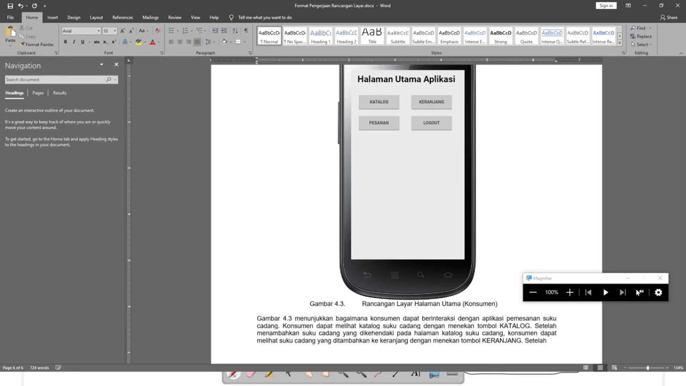

Kesimpulan dari pertemuan 5 :
- Mengulas kembali tata tertib serta kontrak perkuliahan yang meliputi perhitungan kehadiran dan perhitungan nilai tugas
- pada pertemuan ke 5 ini mempelajari rancangan layar
- Mempelajari rancangan layar mobile android menggunakan sofware pencil
- Menjelaskan rancangan layar yang berkaitan dengan Usecase diagram dan Deskripsi Usecase dalam kasus pertemuan sebelumnya
- Mempelajari penggunaan sofware pencil untuk membuat open board di tampilan android :
- Membuat rancang layarLOGIN yang berisikan username, password serta button dan cara penyimpanannya.
- Membuat rancang layar DAFTAR AKUN yang berisikan Nama lengkap, Alamat, No HP/WA, Ussername dan Password serta menjelaskan fungsinya masing-masing.
- Meembuat rancang layar Halaman Utama Aplikasi yang berisi botton katalog, pesanan, keranjang dan logout.
- Kemudian mendeskripsikan di word utk masing-masing rancangan layarnya.
hasil file project pencil Download
